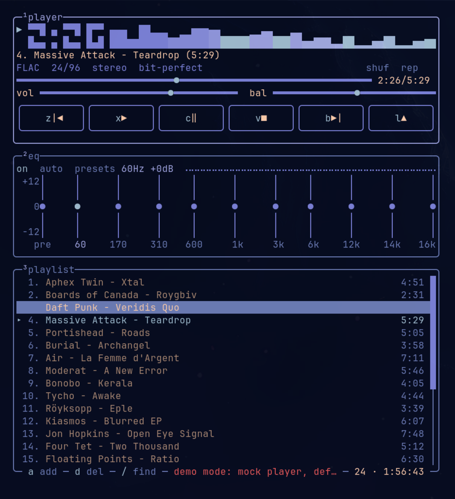
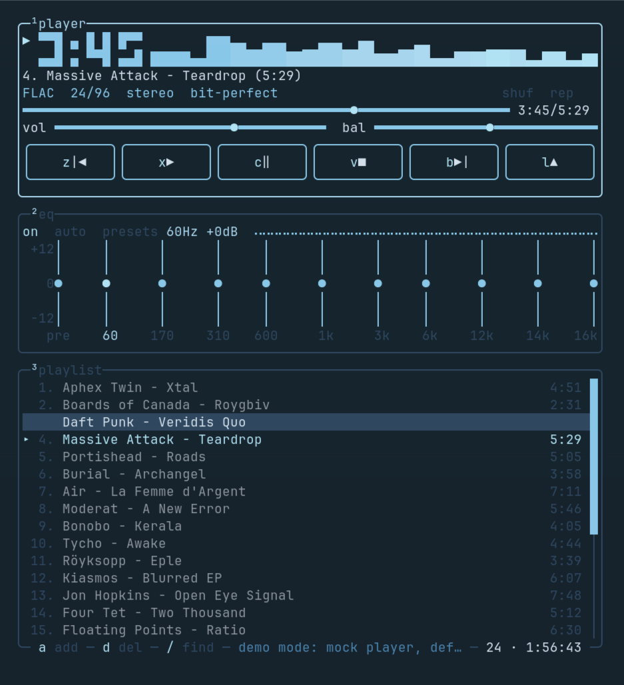

no transcode
No transcoding
Nothing is re-encoded to a friendlier bitrate or format. Jellyfin is always asked for the original file (static=true); SMB shares are read for their original bytes. Whatever arrives is decoded locally — never converted.
Terminal music player · hi-fi first
Your music, exactly as it was mastered.
Ampwire plays the original signal. No transcoding. No resampling. No normalization. The bytes on your disk or on your server are decoded once, locally, and played at the track's own sample rate and channel count.
Winamp 2's anatomy rebuilt from scratch for the terminal: player, spectrum, 10-band EQ and playlist in a keyboard-driven Ratatui TUI.

01 / SIGNAL
Most players are happy to convert your files into something more convenient. Ampwire is built the other way around: the file you own is the file you hear.
no transcode
Nothing is re-encoded to a friendlier bitrate or format. Jellyfin is always asked for the original file (static=true); SMB shares are read for their original bytes. Whatever arrives is decoded locally — never converted.
exact rate
The output stream opens at the track's own sample rate and channel count. If the default device cannot play that exact format, the track is reported as unplayable instead of quietly converted to fit. On Linux the default device is usually PipeWire or Pulse, which can still resample downstream of Ampwire.
opt-in DSP
At volume 100, centered balance, no channel swap and a flat or off EQ, the decoded samples pass through untouched — lossless playback is marked bit-perfect (not for 32-bit integer or 64-bit float sources, which f32 rounds). Volume, balance and the 10-band EQ are opt-in processing, never automatic.
same-stream swap
Tracks that share a sample rate and channel count are joined inside the running stream: the next decoder is swapped in at EOF, with no silence, no click and no device reopen.
What bit-perfect means here. It describes Ampwire's own chain: its volume, balance and EQ stages are bypassed. The OS mixer — PipeWire, CoreAudio, Bluetooth — can still resample on the way to the DAC, and Ampwire does not pretend otherwise.
02 / SOURCES
Local folders, a Jellyfin server and native SMB shares all take the same decode path. No mount, no libsmbclient, no third-party service in the middle of your music.
FLAC · WAV · MP3 · M4A
Load a folder or a single file. FLAC, WAV/PCM, MP3 and M4A (AAC or ALAC), decoded by Symphonia and played through cpal.
j / full library
Press j and the whole server library lands in the playlist. Cache originals ahead of playback, stream with HTTP Range, or stream with the EQ bypassed — always the original file, never a transcode.
smb://nas/Music
smb://nas/Music works anywhere a path does, through a native SMB2/3 client in pure Rust. No kernel mount, no extra system library.
03 / INTERFACE
Ampwire borrows Winamp 2's anatomy — player, equalizer, playlist — and nothing else. It is not a port, a clone or a skin: the UI, the playback engine and the library handling are written from scratch for the terminal.
What you get is a btop-style cyberpunk-retro frame around a modern Rust audio path: a live spectrum, LCD clock and seek bar that follow what is actually being heard, a 10-band EQ with presets, full-permutation shuffle, live search and album → disc → track ordering on load.
Space · l · j · / · ?
Space play/pause, l open, j Jellyfin, / find, ? the full keymap. Every action is remappable in config.toml.
omarchy · neon · amber · matrix · synthwave
On Omarchy the UI follows the active theme live. Or pick neon, amber, matrix or synthwave; non-truecolor terminals get a nearest 256-color mapping.
MPRIS2 · --status · --ctl
MPRIS2 on Linux exposes Ampwire to media keys, lock screens and playerctl. ampwire --status --json reports the real format and bit-perfect state; --ctl drives the running session.


04 / INSTALL
Prebuilt binaries for macOS (Apple Silicon / Intel) and Linux (x86_64 / arm64). One command gets you from a clean shell to a running player.
macOS / Linux
Need upgrades, uninstall instructions or platform troubleshooting? Read the install guide.
The source-built AUR package is prepared in packaging/aur/ and will be published as soon as AUR registration reopens. It builds against your system toolchain, so it has no glibc floor. Until then, use the prebuilt installer above or build from source.
libasound2 / libasound2t64 on Debian/Ubuntu, alsa-lib on Fedora/Arch, alsa on openSUSE).Supply chain
Every release ships SHA-256 checksums and signed build attestations.
macOS
Linux
Keep going